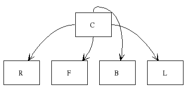
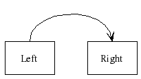
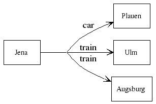
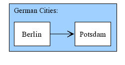
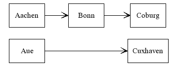

If you haven't done so, please read the Overview first, followed by the chapter about the Layouter details.
This chapter gives an overview over all the different hints you can give the layouter on how to layout the graph. For specific, visual examples, please see the tutorial chapters.
Introduction
Graph::Easy's layouter is responsible for converting a (internal) graph representation into a specific layout. Here are two example layouts, automatically produced from the same input graph:

+---+ +---+ +---+
| A | --> | C | --> | D |
+---+ +---+ +---+
|
|
v
+---+
| E |
+---+
Influencing the Layout
Although the placement of nodes, edges and labels is completely automated, you can influence the created layout by giving the layouter hints like the following:
- adjusting the flow direction
- setting node sizes
- grouping nodes together
- Creating rows/columns of nodes
- Placing nodes relativ to each other
- Enforcing edge lengths and minimum distances
- placing nodes relativ to each other
- specify edge starting/ending ports
Some of the hints will be used only as hints by the layouter, e.g. it might ignore them to produce a complete layout. Other hints like relative node placements are taken as strict "must do", and these might create dilemmas for the layouter. So use them only when absolutely neccessary.
Flow Control
You can use the attribute flow to let the graph flow in another general direction:
Flow-dependend and Flow-independend Directions
Flow can be specified either
absolut (giving absolut directions like south or west),
or relative (directions left, front etc that
are relative to the local flow at that node).
Controlling the Overall Graph Flow
graph { flow: south; }
[ Hamm ] -> [ Essen ] -> [ Olpe ]
+-------+ | Hamm | +-------+ | | v +-------+ | Essen | +-------+ | | v +-------+ | Olpe | +-------+
graph { flow: west; }
[ Hamm ] -> [ Essen ] -> [ Olpe ]
+------+ +-------+ +------+ | Olpe | <-- | Essen | <-- | Hamm | +------+ +-------+ +------+
All four flow directions (north, south, west, east) are supported, even when
generating graphviz code (dot does not easily support
upwards and leftwards flow directions without some trickery).
Controlling the Flow per Node
You can also change the flow on a per-node basis.
In the next example the node Siegen has a flow towards west (because this is
the general flow of the graph). The default flow for all its outgoing edges is
then modified to be left, which amounts to south,
since looking westwards and turning left 90 degress will make you looking
southwards:
graph { flow: west; }
[ Duisburg ] -> [ Siegen ] { flow: south; }
-> [ Adenau ]
+--------+ +----------+ | Siegen | <-- | Duisburg | +--------+ +----------+ | | v +--------+ | Adenau | +--------+
Controlling the Flow per Edge
You can also set the flow direction for each edge on its own.
We modify the example above by adding another node. Instead
of relying on the out-going flow from Siegen, we
give this edge its own flow, namely up. (right
would have worked, too. In fact, relative flow is always better,
we will see below why.)
graph { flow: west; }
[ Duisburg ] -> [ Siegen ] { flow: left; }
-> [ Adenau ]
[ Siegen ] -> { flow: up; } [ Monschau ]
")
+----------+ | Monschau | +----------+ ^ | | +----------+ +----------+ | Siegen | <-- | Duisburg | +----------+ +----------+ | | v +----------+ | Adenau | +----------+
Edge start/end ports
Before we continue with the differences between relative and absolute flow,
let's just have a look at port numbers and sides:
.................................................. : : : : : : : : : 0,0 :north,0:north,1: 3,0 : 4,0 : 5,0 : 6,0 : : :left,0 :left,1 : : : : : : : : : : : : : .................................................. : :+-------------+: : : : : :west,0:| |:east,0 : 4,1 : 5,1 : 6,1 : :back,1:| |:front,0: : : : : :| |: : : : : ........| Node |........................... : :| |: : : : : :west,1:| |:east,1 : 4,2 : 5,2 : 6,2 : :back,1:| |:front,1: : : : : :+-------------+: : : : : ................................................. : : : : : : : : : 0,3 :south,0:south,1: 3,3 : 4,3 : 5,3 : 6,3 : : :right,0:right,1: : : : : : : : : : : : : .................................................
Each side of a node can be named. The reason that there are two names
(north and left)
has to do with graph/node flow. The south side of the node is always
the same side, no matter what the flow at the node is. The right
side is always perpendicular to the front side - and the
front side always points in the direction of the flow.
Here is an example that should make this clear:
[ C ] -> { start: south; } [ S ] { origin: C; offset: 0,2; }
[ C ] -> { start: north; } [ N ] { origin: C; offset: 0,-2; }
[ C ] -> { start: east; } [ E ] { origin: C; offset: 2,0; }
[ C ] -> { start: west; } [ W ] { origin: C; offset: -2,0; }
+---+
| N |
+---+
^
|
|
+---+ +---+ +---+
| W | <-- | C | --> | E |
+---+ +---+ +---+
|
|
v
+---+
| S |
+---+
[ C ] -> { start: right; } [ R ] { origin: C; offset: 0,2; }
[ C ] -> { start: left; } [ L ] { origin: C; offset: 0,-2; }
[ C ] -> { start: front; } [ F ] { origin: C; offset: 2,0; }
[ C ] -> { start: back; } [ B ] { origin: C; offset: -2,0; }
+---+
| L |
+---+
^
|
|
+---+ +---+ +---+
| B | <-- | C | --> | F |
+---+ +---+ +---+
|
|
v
+---+
| R |
+---+
Both graphs look the same, so there does not seem much point in using
right or south. However changing the flow of the
graph will show a difference:
graph { flow: down; }
[ C ] -> { start: south; } [ S ] { origin: C; offset: 0,2; }
[ C ] -> { start: north; } [ N ] { origin: C; offset: 0,-2; }
[ C ] -> { start: east; } [ E ] { origin: C; offset: 2,0; }
[ C ] -> { start: west; } [ W ] { origin: C; offset: -2,0; }
+---+
| N |
+---+
^
|
|
+---+ +---+ +---+
| W | <-- | C | --> | E |
+---+ +---+ +---+
|
|
v
+---+
| S |
+---+
graph { flow: down; }
[ C ] -> { start: right; } [ R ] { origin: C; offset: 0,2; }
[ C ] -> { start: left; } [ L ] { origin: C; offset: 0,-2; }
[ C ] -> { start: front; } [ F ] { origin: C; offset: 2,0; }
[ C ] -> { start: back; } [ B ] { origin: C; offset: -2,0; }
+---+
| L | <+
+---+ |
|
+---------+ |
v | |
+---+ +---+ | +---+
| B | +- | C | -+ | F |
+---+ | +---+ +---+
| | ^
| +---------+
|
| +---+
+> | R |
+---+

You can see that the first graph did not change at all.
The second one looks different, though. Since the node offsets are fixed
(they do not change with the flow, as this is not possible yet), all the nodes
are still placed at the same position.
But the starting ports moved (rotated) with the flow direction!
Summary: To make graphs flow-invariant, use south etc, to make it possible
to rotate graphs, use left, right, front
or back.
Here is one more example:
graph { flow: east; }
[1 - turn back]
--> {flow: back } [2 - turn left]
--> {flow: left } [3 - turn left]
--> {flow: left } [4 - turn right]
--> {flow: right } [5 - turn right]
--> {flow: right } [6 - finished]
+---------------+ +----------------+
| 2 - turn left | <-- | 1 - turn back |
+---------------+ +----------------+
|
|
v
+---------------+ +----------------+
| 3 - turn left | --> | 4 - turn right |
+---------------+ +----------------+
|
|
v
+---------------+ +----------------+
| 6 - finished | <-- | 5 - turn right |
+---------------+ +----------------+
Port numbers
By setting the start/end port to one side, you instruct the layouter to place the edge on one arbitrary port on that side:
[ Left ] -> { start: left; end: left; } [ Right ]

+------------+ | v +------+ +-------+ | Left | | Right | +------+ +-------+
Joins (Edge Splicing and Splitting
Whenever two (or more) edges share one common start port (not just one side, like
south), they will split up somewhere along their path.
Likewise, when two or more edges share one common end port, the
edges will joint up somewhere on their way to the target node:
[ Potsdam ], [ Mannheim ]
--> { end: back,0; }
[ Weimar ]
--> { start: front,0; } [ Finsterwalde ], [ Aachen ]

+----------+ +--------+ +--------------+
| Mannheim | ------+-> | Weimar | -+-----> | Finsterwalde |
+----------+ | +--------+ | +--------------+
| |
| |
| |
+----------+ | | +--------------+
| Potsdam | ------+ +-----> | Aachen |
+----------+ +--------------+
This works even in combination with edge labels:
[ Jena ]
-- train --> { start: front, 0; }
[ Augsburg ], [ Ulm ]
[ Jena ] -- car --> { start: front, 0; } [ Plauen ]

+------+ train +----------+
| Jena | ------+----------> | Ulm |
+------+ | +----------+
| train +----------+
+----------> | Augsburg |
| +----------+
| car +----------+
+----------> | Plauen |
+----------+
Node sizes (multi-celled nodes)
You can specify the size of a node in rows and columns by using either the
rows, columns or size attribute:
[ A ] { size: 2,2; }
-> [ B ] { rows: 2; }
-> [ C ] { columns: 3; }
Here is an example that demonstrates this:
[ A ] { size: 2,2; }
-> [ B ] { rows: 2; }
-> [ C ] { columns: 3; }
[ A ] -> [ B ]
-> [ C ]
-> [ D ]
[ D ] -> [ C ]
[ B ] -> [ C ]
[ A ] -> [ F ]
[ A ] -> [ G ]
+---------+ +---------+
| v v |
+---+ +---+ +---+ +--------+ +---+
| G | <-- | | --> | | --> | C | --> | D |
+---+ | A | | B | +--------+ +---+
| | | | ^
| | --> | | ------+
+---+ +---+
|
|
v
+---+
| F |
+---+
Even when you do not specify a size, the layouter will grow nodes
automatically to satisfy the constraints of the layout, for
instance when more than four edges start/end at a particular
node. Likewise, when specifying edge ports (see above),
these constraints will grow the node if necessary.
As an example, if you specifiy that there are 5 edges starting/ending
at the south side of the node, than the node will be made
at least 5 cells wide.
Groups
Nodes can be grouped together by using braces, thus creating a subgraph (or cluster). A group gives the layouter the hint that these nodes are related and should be laid out closely together:
( German Cities
[ Berlin ] -> [ Potsdam ]
) {
border-style: dashed;
}

................................... : German Cities: : : : : +-------------+ +---------+ : : | Berlin | --> | Potsdam | : : +-------------+ +---------+ : : : :.................................:
The grouping feature is especially powerfull in combination with the
nodeclass attribute:
node.cities { color: blue; }
( German Cities
[ Berlin ] -> [ Potsdam ]
) {
border-style: dashed;
nodeclass: cities;
}
In this example, all nodes in the group will automatically be put into the
class node.cities.
You can also defined edges that run from one group to another, or from a node to a group, or from a group to a node:
[ From Node to Group ] --> ( German cities: [ Berlin ] -> [ Potsdam ] ) -- group to group --> ( German rivers: [ Rhein ] -> [ Elbe ] ) --> [ From Group to Node ]
Relative placement (via minlen)
Sometimes you want to enforce a minimum distance between different nodes.
To achive this, you can set the minlen
attribute on an edge.
If necessary, you can also set the edge to invisible
to hide it from view:
[ Aachen ] --> [ Bonn ] --> [ Coburg ]
[ Aue ] --> { minlen: 3; } [ Cuxhaven ]

+--------+ +------+ +----------+ | Aachen | --> | Bonn | --> | Coburg | +--------+ +------+ +----------+ +--------+ +----------+ | Aue | ---------------> | Cuxhaven | +--------+ +----------+
The advantage of setting a minlen on an edge is that the distance
is enforced in the direction of the flow, e.g. with an relative flow
the distance becomes rotation-invariant. If one would use a
relative placement via offset, the two nodes would
be always placed with the same offset from each other, no matter
what the flow of the graph is.
Relative placement (via auto-split)
You can cluster nodes together by placing them relatively to each other.
Perhaps the easiest way to achive the placement is to use the
auto-split feature:
- a
|(vertical bar) in the node name will split the node into two parts, and place them next to each other, horizontally - likewise,
||(two vertical bars) in the node name will split the node into two parts, but place the second part at the start of a new row - If a part between two
|consists of exactly one space, an invisible cell will be generated, e.g. one without borders and background - If a part between two
|consists of more than one space, an empty cell (e.g. with borders and background) will be generated - Trailing empty parts will be treated just like when they apeared in the
middle, e.g. both
[ |...and[|..-create an invisible leading part, while[ |...(two spaces) creates an empty, but visible leading part. Likewise for trailing parts.
Here is a few examples to make this clear:
[ A | B | C ]
+---+---+---+ | A | B | C | +---+---+---+
[ A | B || C ]
+---+---+ | A | B | +---+---+ | C | +---+
[ A | B || C | D | E || F ]
+---+---+ | A | B | +---+---+---+ | C | D | E | +---+---+---+ | F | +---+
And now an example showing empty trailing and leading parts:
[ | C | ] [ | D | ] [ | E | ] [ | F | ] [|G|] [ |H| |] [ C.2 ] -> [ A1 ] [ D.2 ] -> [ A2 ] [ E.2 ] -> [ A3 ] [ F.2 ] -> [ A4 ] [ G.2 ] -> [ A5 ] [ H.3 ] -> [ A6 ]
+--+---+--+ +----+
| | C | | --> | A1 |
+--+---+--+ +----+
|---+--+ +----+
| D | | --> | A2 |
---+--+ +----+
+--+---+ +----+
| | E | --> | A3 |
+--+---+ +----+
|---+ +----+
| F | --> | A4 |
---+ +----+
|---+ +----+
| G | --> | A5 |
---+ +----+
+--+---+ +----+
| | H | --> | A6 |
+--+---+ +----+
Please see the section about attributes on how to put individual attributes on each autosplit node.
To reference an autosplit node, you need to know its basename and the number of the part that was split up. The basename can be set via an attribute. If not specified, it will be automatically created by concatenating all the parts together, without spaces or linebreaks. If the basename already exists, an incrementing number is appended (including a leading "-"), starting with "1":
[ A | B | C ] # basename is: ABC [ A | B | C ] # basename is: ABC-1
In this example, the basename for the first autosplit node is "ABC", the second one get's as basename "ABC-1".
[ A | B | C ] # basename: ABC [ A | B | C ] # basename: ABC-1 [ C | D | E ] # basename: CDE [ C | D | E ] # basename: CDE-2
Note that the number is unique and increasing for the entire graph, thus creating "CDE" and "CDE-2", and not "CDE-1" in the second example.
The parts are referenced by their number, with a leading ".". Here is an example referencing the second part of the autosplit node:
[ A | B | C ] [ 1 ] -> [ ABC.2 ]
+---+
| 1 |
+---+
|
|
v
+---+---+----+
| A | B | C |
+---+---+----+
Here is a more complex example, using the basename attribute:
[ A|B|C ] { basename: A } [ 1 ] -> [ A.2 ]
[ A|B|C ] [ 2 ] -> [ ABC-1.2 ]
This will be rendered like so:
+---+
| 2 |
+---+
|
|
v
+---+---+----+
| A | B | C |
+---+---+----+
+---+
| 1 |
+---+
|
|
v
+---+---+----+
| A | B | C |
+---+---+----+
Relative Node Placement (with offsets)
Another way is to specify an origin and offset
for a node, placing it relatively to another node:
[ Left ] -> [ Right ] { origin: Left; offset: 2,1; }
+------+
| Left |
+------+
|
| +-------+
+------------> | Right |
+-------+
The offset should not be 0,0. Also, be carefull to node place nodes
inside each other, especially when using multicelled nodes as explained above.
The offset is calculated from the left/right or top/bottom side of the node, so for a multicelled node that is 3 cells wide, an offset of 2 would still place the next node two cells from the right side (instead inside the first node):
[ A ] { size: 3,2; }
[ A ] -> [ B ] { origin: A; offset: 2,0; }
[ A ] -> [ C ] { origin: A; offset: 1,1; }
+---+ +---+
| | --> | B |
| A | +---+
| |
| |--+
+---+ v
+---+
| C |
+---+
You can set an origin for each node, even if this node has an
origin itself. The only exception is that you may not create loops like in
the following:
[ A ] { origin: B; offset: 1,1; }
[ B ] { origin: A; offset: 1,1; } # invalid!
[ C ] { origin: E; offset: 1,1; }
[ D ] { origin: C; offset: 1,1; }
[ E ] { origin: C; offset: 1,1; } # invalid!
And here is an example, using a chain of origins:
[ A ] { origin: B; offset: 2,1; }
-> [ B ] { origin: C; offset: 1,1; }
-> [ C ] { origin: D; offset: 1,1; }
-> [ D ]
-> [ E ]
+---+ +---+
| D | --> | E |
+---+ +---+
^ +---+
+--| C |
+---+
^ +---+
+--| B |
+---+
^ +---+
+------ | A |
+---+